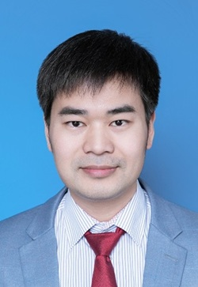

Jiayi Ma (马佳义)
Professor
Email: jiayima@whu.edu.cn · jyma2010@gmail.com
Research interests: computer vision, image matching and registration, information fusion, image enhancement, and machine learning.

Short Bio
Dr. Jiayi Ma is a Full Professor with the Electronic Information School, Wuhan University. His research focuses on image matching and registration, information fusion, low-level vision, and learning-based visual perception.
He received the B.S. degree in Information and Computing Science and the Ph.D. degree in Control Science and Engineering from Huazhong University of Science and Technology in 2008 and 2014, respectively.
Research Interests
- Image matching, point-set registration, and correspondence learning.
- Multi-modal image fusion and semantic-aware visual perception.
- Image enhancement, remote sensing, and robust machine learning.
Academic Activities
Co-Editor-in-Chief: Information Fusion and Chinese Journal of Information Fusion.
Editorial service: Associate Editor and editorial-board member for journals in computer vision and information fusion.
Conference service: Reviewer and program-committee service for leading venues in computer vision, pattern recognition, and information fusion.
Student Mentorship
As of September 2025, Prof. Ma has supervised 20 graduated and 19 current graduate students. Publication records below list first-author papers completed during study.
Graduated Students20 alumni
- 蒋兴宇Professional M.S. (2017–2019), Ph.D. (2019–2022)1 IJCV, 2 IEEE TIP, 2 PR, 2 IEEE TGRS, 1 Information Fusion, 1 NeurIPS, 1 ICASSPAssociate Professor, Huazhong University of Science and Technology
- 余威Professional M.S. (2017–2019)2 Information FusionBaidu
- 梁鹏伟Professional M.S. (2017–2019)1 Information FusionAlibaba
- 周怡Academic M.S. (2017–2020)1 CVIUState Grid
- 彭程里Ph.D. (2018–2021)2 PR, 1 TMM, 1 TGRS, 1 Neural Networks, 1 JCST, 1 IEEE/CAA JAS, 1 IEEE TIMLecturer, Central South University
- 徐涵Integrated M.S.–Ph.D. (2018–2023)2 IEEE TPAMI, 1 IJCV, 2 IEEE TIP, 1 IEEE/CAA JAS, 1 CVIU, 1 Information Fusion, 2 IEEE TCI, 1 IEEE TGRS, 1 IEEE TIM, 1 CVPR, 1 ICCV, 1 IJCAI, 2 AAAI, 1 RS, 1 图图学报Associate Professor, Southeast University
- 王歆雅Integrated M.S.–Ph.D. (2018–2023)1 Information Fusion, 1 IEEE TIE, 1 IEEE TGRS, 1 IEEE TCI, 3 IEEE/CAA JAS, 1 Neural Networks, 1 FITEE, 1 ICASSPPostdoctoral Fellow, NIH
- 范翱翔Academic M.S. (2018–2021)1 ECCV, 1 CVPR, 1 IEEE TPAMI, 1 IJCV, 1 IEEE TNNLSPh.D. student, EPFL
- 张浩Professional M.S. (2019–2021), Ph.D. (2021–2024)2 AAAI, 2 CVPR, 1 NeurIPS, 1 IEEE TPAMI, 2 IJCV, 1 IEEE TIP, 1 IEEE TCI, 1 IEEE TIE, 1 IEEE TMM, 2 ISPRS P&RS, 4 Information Fusion, 1 IEEE TIM, 1 计算机研究与发展Hongyi Postdoctoral Fellow, Wuhan University
- 王阳Professional M.S. (2019–2021)1 Neurocomputing, 1 IEEE TMM, 1 ISPRS P&RSAlibaba
- 乐朱亮Professional M.S. (2019–2021)1 IEEE TCI, 1 Information Fusion, 1 NCAAAlibaba
- 张恺宁Integrated M.S.–Ph.D. (2019–2025)2 IEEE TITS, 2 IEEE/CAA JAS, 1 ICRA, 1 IROS, 1 ICML, 1 CVPRAssistant Professor, Hunan University
- 高文静Academic M.S. (2019–2022)1 IEEE TIIState Grid
- 唐霖峰Integrated M.S.–Ph.D. (2020–2025)1 IJCV, 1 IEEE TPAMI, 1 IEEE TIM, 1 TMM, 4 Information Fusion, 2 IEEE/CAA JAS, 1 IEEE TNNLS, 1 PR, 1 图图学报, 1 NeurIPS, 1 CVPR, 1 ACM MMHongyi Postdoctoral Fellow, Wuhan University
- 邓宇新Integrated M.S.–Ph.D. (2020–2025)1 IEEE TIP, 1 ICCV, 3 AAAIAssistant Researcher, Peng Cheng Laboratory
- 李梓卓Professional M.S. (2020–2022), Ph.D. (2022–2025)1 ICCV, 1 IJCAI, 1 ACM MM, 2 IEEE TIP, 1 IEEE TNNLS, 1 IEEE TCSVT, 1 PR, 2 ISPRS P&RS, 1 IEEE TPAMIHongyi Postdoctoral Fellow, Wuhan University
- 袁纪腾Professional M.S. (2021–2023)1 IEEE TCIAlibaba
- 胡骞Academic M.S. (2022–2023)1 TIP, 1 TGRS, 1 IEEE/CAA JASTransferred to another advisor
- 张诗化Academic M.S. (2022–2025)2 AAAI, 1 CVPR, 1 ACM MM, 2 IEEE TPAMI, 1 CVIUPh.D. student, National University of Singapore
- 左旭辉Professional M.S. (2023–2025)1 AAAITencent
Current Students19 students
- 夏一帆Direct Ph.D. (2021–)1 IJCV, 1 PR, 2 IEEE TIP, 1 ISPRS P&RS, 3 AAAI
- 卢意帆Integrated M.S.–Ph.D. (2021–)1 Cell, 1 IJCV, 1 CVPR, 1 AAAI, 1 IEEE/CAA JAS
- 龚美琪Professional M.S. (2021–2023), Ph.D. (2023–)1 CVIU, 2 TGRS, 1 IEEE/CAA JAS, 1 IJCAI, 1 ICCV
- 王何百旭Integrated M.S.–Ph.D. (2022–)2 Information Fusion, 1 NeurIPS, 1 CVPR, 1 ICCV, 1 AAAI, 1 ACM MM
- 向昕宇Professional M.S. (2022–2024), Ph.D. (2024–)2 Information Fusion, 1 CVPR, 1 AAAI
- 伊勋鹏Integrated M.S.–Ph.D. (2023–)2 ICCV, 1 CVPR, 1 IEEE TPAMI, 1 The Innovation, 1 Information Fusion, 1 IEEE/CAA JAS
- 方向Academic M.S. (2023–)2 TIP, 1 ISPRS P&RS
- 燕庆龙Professional M.S. (2023–2025), Ph.D. (2025–)1 IJCV, 2 AAAI, 1 自动化学报
- 曹磊Academic M.S. (2024–)2 NeurIPS
- 李春雨Academic M.S. (2024–)1 IEEE TPAMI
- 乐佳俊Direct Ph.D. (2024–)2 AAAI
- 朱珍杰Professional M.S. (2024–)1 AAAI
- 黄俊Professional M.S. (2024–)
- 李晟祥Professional M.S. (2024–)
- 张逸冰Direct Ph.D. (2025–)1 ICCV
- 查延平Academic M.S. (2025–)1 AAAI, 1 CVPR
- 王业达Professional M.S. (2025–)1 NeurIPS
- 王博天Professional M.S. (2025–)1 AAAI
- 徐天浩Professional M.S. (2025–)1 CVPR
Honors & Awards
- IEEE SPS Best Paper Award (first author)
- IEEE/CAA Journal of Automatica Sinica, Outstanding Contributions Author
- CAAI Doctoral Dissertation Incentive Program Mentor Award
- Information Fusion Best Paper Award (corresponding author)
- CSIG Doctoral Dissertation Incentive Program Mentor Award
- Research.com Rising Star of Science Award (ranked 25 in China and 77 worldwide)
- Hsue-shen Tsien Paper Award (IEEE/CAA JAS Best Paper Award, first author)
- Outstanding Undergraduate Thesis Supervisor, Wuhan University
- IEEE/CAA Journal of Automatica Sinica Outstanding ECAB Award
- Information Fusion Best Editor Award
- Second Prize, Hubei Provincial Natural Science Award (third contributor)
- Outstanding Editorial Board Member, Chinese Journal of Image and Graphics
- Outstanding Master's Thesis Supervisor Award, Chinese Association of Automation and China Institute of Communications
- First Prize, State Grid Corporation of China Science and Technology Progress Award (fifth contributor)
- Clarivate Highly Cited Researcher
- Elsevier Highly Cited Chinese Researcher
- Stanford University World's Top 2% Scientists (career-long impact list)
- Selected for the National High-Level Young Talent Program
- Ninth Wu Wenjun AI Outstanding Youth Award
- First Prize, Hubei Provincial Natural Science Award (first contributor)
- Second Prize, Chinese Association of Automation Natural Science Award (second contributor)
- Outstanding Doctoral Dissertation of Hubei Province
- CAA Outstanding Doctoral Dissertation (one of ten nationwide)
- CAAI Outstanding Doctoral Dissertation (one of eight nationwide)
Selected Publications
* corresponding author. A selected list of representative papers; see all publications for the complete, daily refreshed record.
- Loading selected publications...